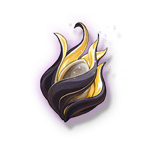

Cadence Leaf
Development Materials

Advanced material for weapon breakthrough and skill upgrade for characters using the Gauntlets.
A strange object resembling a plant leaf, if you listen carefully, you can perceive the sound of bathing in the sun and sucking in the rain. In fact, they seem to be able to absorb free frequency energy from the environment.